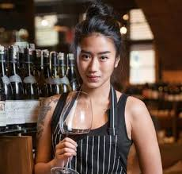
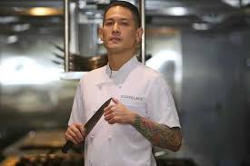

CHEF RENATA
Chef Renatta kini sedang menjadi sorotan publik karena menjadi salah satu juri di MasterChef Indonesia menggantikan Chef Marinka.
Wanita bernama lengkap Renatta Moeloek ini adalah seorang koki asal Indonesia. Chef Renatta memiliki usaha private dining dan merupakan konsultan menu di sejumlah restoran di Indonesia.
CHEF JUNA
Junior Rorimpandey atau biasa dikenal dengan nama Chef Juna adalah seorang koki profesional kelahiran Manado, 20 Juli 1975. Chef Juna adalah seorang koki spesialis makanan Jepang dan Perancis yang telah menghabiskan waktu selama kurang lebih 12 tahun di luar negeri.